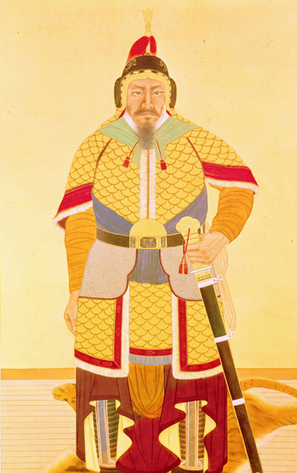

이순신

한국사에서 독보적으로 유명한 군인이자 성웅[7]이란 칭호가 따로 붙을 정도로 가장 드높은 영웅이며, 무장 이외에 역사적 인물 전체로 넓혀도 세종대왕과 함께 한국에서 가장 유명한 인물이다. 고구려의 을지문덕, 고려의 강감찬과 함께 시대를 대표하는 구국영웅이자 한국사 3대 명장으로 손꼽히며,[8] 인간으로서도 희대의 걸물이요, 파란만장한 삶을 산 사내이다. 그는 임진왜란 시기 조선 수군을 이끌고 해상에서 연전연승을 거듭하며 일본군의 보급로를 차단하여 북상을 저지하였는데, 전쟁 내내 적과 싸워 모든 전투에서 최소한의 희생으로 항상 승전을 거두었지만, 당시 임금인 선조[9]와 조정에게 지원은 커녕 불합리한 모함과 추궁만 당하였다. 끝까지 임금에게 닿지 않을 충심과 함께 온 힘을 다했으나, 임진왜란의 마지막 전투인 노량 해전에서 장렬한 죽음을 맞이했다.
김유신

신라 상대~중대의 무장. 진평왕부터 문무왕까지 80년에 가까운 기간 동안 살며 5명의 신라 왕을 섬겼다. 옛 금관국 구형왕 김구해의 직계 후손이며 골품은 진골이었다. 성골 왕통의 단절로 인한 극도의 정정 불안정 속에서 약화된 신라군을 이끌고 재앙에 가까웠던 백제의 대침공을 막고 수차례 계속된 서라벌 귀족들의 반란을 진압하여 망국의 단계에 돌입한 신라를 보전하였으며 거기에 더하여 삼한일통의 대업을 이룬 대영웅으로, 한국사에서 왕통 직계는 커녕 왕족조차 아님에도 사후 당대에 대왕으로 추존된 유일한 인물이기도 하다. [6]
강감찬
고려시대의 명신. 여요전쟁 당시 거란의 대군을 몰살해버린 귀주 대첩을 주도한 문신(文臣)으로, 동아시아 역사 전체에 영향을 미친 구국영웅이자 정치적으로도 고려사 리즈시절을 이끈 현종의 치세에 큰 도움을 준 명재상이였다. 또한 고구려의 을지문덕, 조선의 이순신과 더불어 한국사 3대 명장으로 평가받는다. 이 셋은 모두 500여년 정도의 시차를 두고 떨어져 있다. 또한 서희, 현종과 더불어 고려시대를 대표하는 위인으로도 거론되고 세종대왕, 이순신과 더불어 서울이 낳은 위인이기도 하다